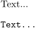

Contents
Summary
The environment \startbuffer ... \stopbuffer is used for temporarily storing content.
Settings
| \startbuffer[...] ... \stopbuffer | |
| [...] | name |
| Option | Explanation |
|---|---|
| You can give a name to the buffer if you want. | |
Description
You can store information temporarily for future use in your document with:
\startbuffer[visit] If you want to see what Hasselt has in store you should come and visit it some time. \stopbuffer \getbuffer[visit]
With
\getbuffer[visit]
you recall the stored text. The logical name is optional. With
\typebuffer[visit]
you get back the verbatim contents of the buffer, typeset as though inside \starttyping...\stoptyping.
Buffers are set up with:
\setupbuffer[..,..=..,..]
You can also create your own named buffers as an instance of startbuffer by using \definebuffer.
Note that the default \startbuffer is not an instance of startbuffer; it has its own (equivalent) definition.
Examples
Example 1
-
\startbuffer[buffer-name] Text... \stopbuffer \getbuffer[buffer-name] % insert content of \startbuffer ... \stopbuffer \typebuffer[buffer-name] % type content in verbatim mode
- 
Notes
- By Benjamin on 2021-08-02T20:37:54+0200 :
To test if a (potentially empty) buffer exists: \doifelsebuffer{buffername}{yes}{no}
To test if a buffer has content (more than blank lines): \doiftextelse{\getbuffer[buffername]}{yes}{no}